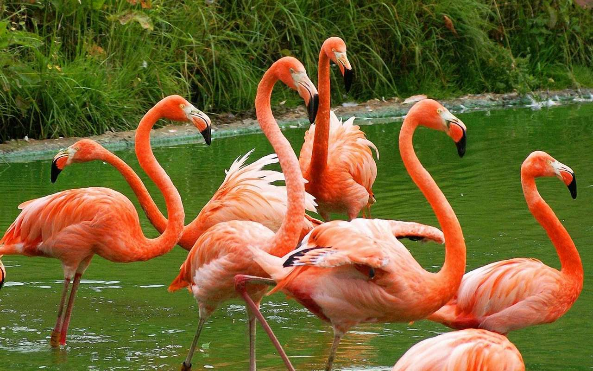

РОЖЕВИЙ ФЛАМІНГО

Опис
Птах розміром з білого лелеку. Вага тіла 2,1—4,1 кг, довжина тіла 125—145 см, розмах крил 140—165 см. У дорослого птаха оперення біло-рожеве; значна частина покривних пер верху крил, а також спід крил пурпурово-червоні; махові пера чорні; дзьоб рожевий, на кінці чорний; ноги рожеві; райдужна оболонка ока світло-жовта. Молодий птах бурий; дзьоб сірувато-бурий; ноги темно-бурі; райдужна оболонка ока коричнева. Дорослий наряд набувають на третьому році життя.
Поширення
Гніздовий ареал складається з декількох розірваних частин та охоплює Африку, південь Європи й Азії. В Європі гніздяться на півдні Франції й Іспанії. В Африці фламінго гніздиться на озерах Марокко, Тунісу, Мавританії, Кенії, на півдні континенту; на островах Зеленого мису. В Азії гніздяться в Казахстані, Афганістані, Індії. Північні популяції є перелітними, південні — осілі.
На півдні України поодинокі птахи або невеликі групи трапляються щороку. У 2017 році відомий випадок гніздування на Сиваші в Херсонській області. Залітних птахів зареєстрували на початку травня 2020 року на Тилігульському лимані, що на кордоні Миколаївської та Одеської областей[3]. Навесні 2023 року до Національного природного парку «Тузловські лимани» прилетіло щонайменше 35 рожевокрилих фламінго.
Чисельність
Чисельність в Палеарктиці оцінюють в 205—320 тис. у тому числі популяції на південному заході і півдні Азії нараховують близько 240 тис. Чисельність популяцій в Африці на південь від Сахари оцінюють в 100—120 тис. Чисельність в Палеарктиці дещо збільшується, тоді як на півдні Азії та в Афротропіках є стабільною.
Спосіб життя
Фламінго населяє великі озера з солоною водою, морські лагуни і лимани. Живиться на мілководді з мулистим дном проціджуючи воду дзьобом. Живляться фламінго дрібними ракоподібними, молюсками, личинками мух, а також одноклітинними водоростями Aphanothece sabina та насінням деяких рослин. Наявність у живленні ракоподібних і червоних водоростей забезпечує рожеве забарвлення птахів.
Гніздування
Статевої зрілості досягає у 3 роки, хоча частіше гніздитись починає у віці 5—6 років. Моногам, гніздиться великими колоніями, які нараховують декілька сотень або навіть тисяч пар. Гніздо роблять з глини або мулу у вигляді конусоподібного утворення. Кладка складається з 1—3 яєць.
Утримання в неволі
Фламінго нерідко утримують у неволі. В Україні цих птахів можна побачити в Одеському, Миколаївському, Київському зоопарках. У зоопарках фламінго годують морквою, яка містить жовто-оранжевий рослинний пігмент бета-каротин, саме він додає жовто-помаранчеві відтінки до забарвлення. Якщо птах не буде споживати їжу яка містить бета-каротин, то пігмент виділятися не буде — птах стане білим.
НАЗАД ДО МЕНЮ
НАЗАД ДО БУРОГО ПЕЛІКАНА
ПЕРЕЙТИ ДО БЕРКУТА